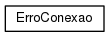

QTDataPlotter
Página Principal
Namespaces
Classes
Arquivos
Lista de Componentes
Índice dos Componentes
Hierarquia de Classes
Componentes Membros
Hierarquia de Classes
Vá para a Hierarquia de Classes (texto)

Gerado por
1.8.11
 1.8.11
1.8.11